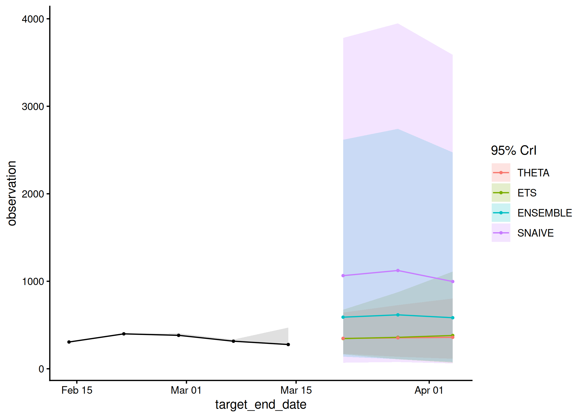

acciddasuite provides a simple pipeline for infectious diseases forecasts. It validates input data (check_data()), optionally applies nowcasting to adjust for reporting delays (get_ncast()), and generates forecasts (get_fcast()).
Installation
You can install the development version of acciddasuite from GitHub with:
# install.packages("pak")
#pak::pak("ACCIDDA/acciddasuite")Example
library(acciddasuite)
head(example_data)
#> # A tibble: 6 × 5
#> as_of location target target_end_date observation
#> <date> <chr> <chr> <date> <dbl>
#> 1 2024-11-17 NY wk inc covid hosp 2020-08-08 517
#> 2 2024-11-24 NY wk inc covid hosp 2020-08-08 517
#> 3 2024-12-01 NY wk inc covid hosp 2020-08-08 517
#> 4 2024-12-08 NY wk inc covid hosp 2020-08-08 517
#> 5 2024-12-15 NY wk inc covid hosp 2020-08-08 517
#> 6 2024-12-22 NY wk inc covid hosp 2020-08-08 517
fcast <- example_data |>
check_data() |>
get_ncast() |>
get_fcast(
eval_start_date = max(example_data$target_end_date) - 28,
h = 3 # forecast 3 weeks into the future
)
#> ℹ Using max_delay = 12 from data
#> ℹ Truncating from max_delay = 12 to 4.
#> Warning: 1 error encountered for ARIMA
#> [1]
#> ℹ Some rows containing NA values may be removed. This is fine if not
#> unexpected.
#> ℹ Some rows containing NA values may be removed. This is fine if not
#> unexpected.
#> Warning: 1 error encountered for ARIMA
#> [1]
#>
#> 1 error encountered for ARIMA
#> [1]
#>
#> 1 error encountered for ARIMA
#> [1]
fcast$plot
Save to myRespiLens format:
to_respilens(fcast, path = "respilens.json")